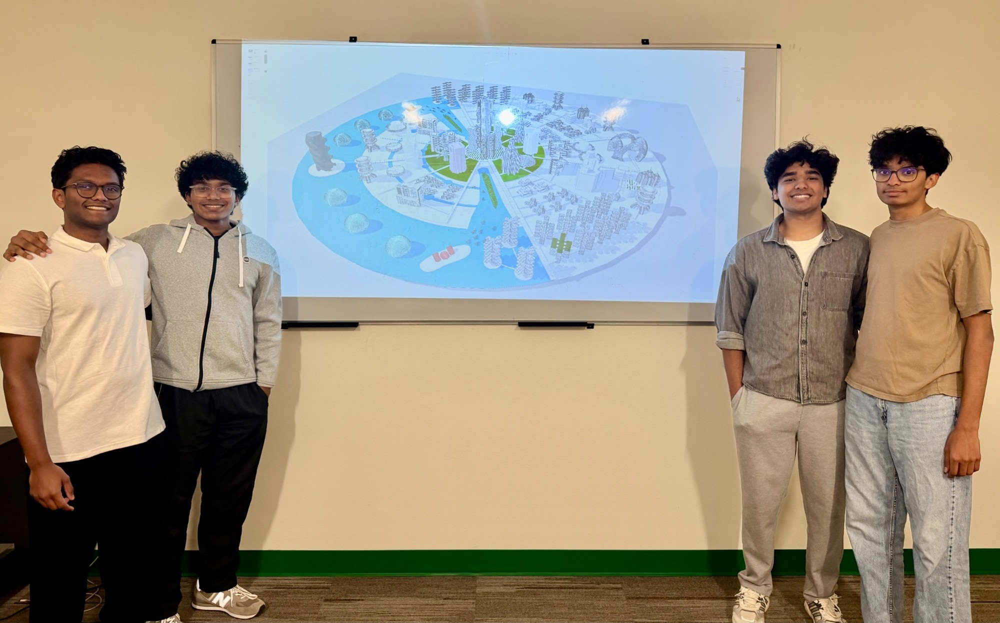

Portfolio / 01
Selected projects.
A collection of lab work, digital circuits, design concepts, and physical builds.

Cornell · ENGRI 1100
Nitrogen Laser — Pulse Amplifier Group ↗
Built the pulse amplifier with a team of three for a collaborative nitrogen laser lab project, developing skills in soldering, circuit layout, and subsystem integration.

Engineering Design & Development
Electric Bike Conversion Kit ↗
Led research, calculations, electrical diagrams, and cost optimization for a team conversion-kit project. Helped with wiring and CAD and reached out to an experienced local hobbyist.

Course projects · Multisim & hardware
PLTW Digital Electronics ↗
PLTW coursework in circuit design and digital logic, with original Multisim schematics, hardware demonstrations, and proficiency in breadboard construction and simulation.

Testing · Product analysis
Hair Dryer Reverse Engineering ↗
In a PLTW capstone team project, I helped analyze a hair dryer through performance testing and a systematic teardown.

Aerospace · Research · CAD
NASA HAS & Moonshot ↗
Lunar spacesuit research and CAD, hands-on aerospace prototypes, and the design lessons I brought to Team Foxtrot 02.

Sustainable design · CAD · Leadership
Future City ↗
Leading 3D modeling, connecting urban systems, and mentoring students through sustainable city design.

Rocketry · PLTW · Leadership
Rocket Science & Aerospace Engineering ↗
Model rockets, airfoil testing, balsa glider design, and simulated flight planning—connecting club leadership with hands-on aerospace coursework.